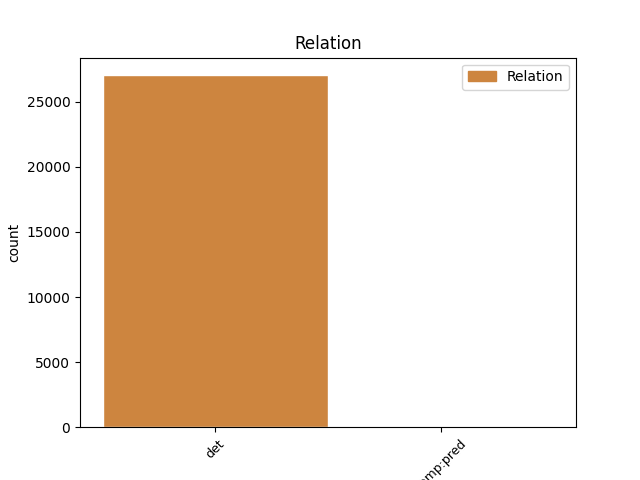
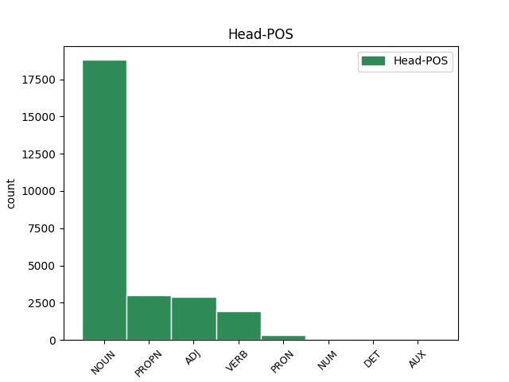
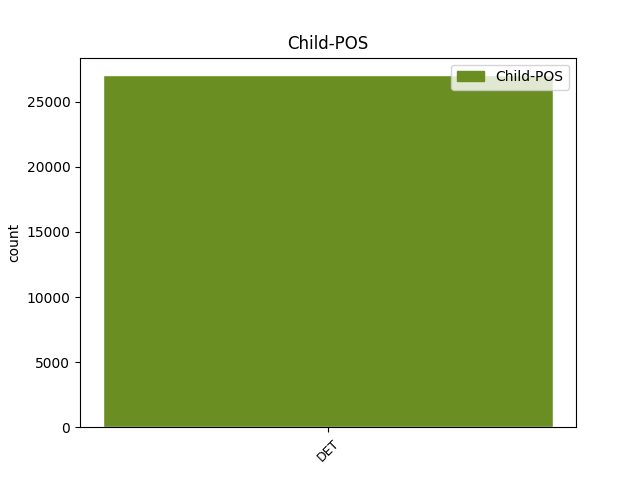

Distribution of features within this leaf



Agreement Rules sorted by frequency.
- When the dependent token is the determiner(det) of the head token, and the dependent token is DET.
1 Ἡ _ _ _ _ 0 _ _ _
2 χάρις _ _ _ _ 0 _ _ _
3 τοῦ ὁ DET S- Case=Gen|Definite=Def|Gender=Masc|Number=Sing|PronType=Dem 4 det _ ref=REV_22.21
4 κυρίου κύριος NOUN Nb Case=Gen|Gender=Masc|Number=Sing 0 _ _ _
5 Ἰησοῦ _ _ _ _ 0 _ _ _
6 μετὰ _ _ _ _ 0 _ _ _
7 πάντων _ _ _ _ 0 _ _ _
1 ὁ _ _ _ _ 0 _ _ _
2 δὲ _ _ _ _ 0 _ _ _
3 Ἀλκμέων _ _ _ _ 0 _ _ _
4 πρὸς _ _ _ _ 0 _ _ _
5 τὴν _ _ _ _ 0 _ _ _
6 δωρεὴν _ _ _ _ 0 _ _ _
7 ἐοῦσαν εἰμί AUX V- Case=Acc|Gender=Fem|Number=Sing|Tense=Pres|VerbForm=Part|Voice=Act 0 _ _ _
8 τοιαύτην τοιοῦτος DET Pd Case=Acc|Gender=Fem|Number=Sing 7 comp:pred _ ref=6.125.3
9 τοιάδε _ _ _ _ 0 _ _ _
10 ἐπιτηδεύσας _ _ _ _ 0 _ _ _
11 προσέφερε _ _ _ _ 0 _ _ _
Disagree Examples:
1 τὸ _ _ _ _ 0 _ _ _
2 δὲ _ _ _ _ 0 _ _ _
3 Ἄργος _ _ _ _ 0 _ _ _
4 τοῦτον _ _ _ _ 0 _ _ _
5 τὸν _ _ _ _ 0 _ _ _
6 χρόνον _ _ _ _ 0 _ _ _
7 προεῖχε _ _ _ _ 0 _ _ _
8 ἅπασι _ _ _ _ 0 _ _ _
9 τῶν ὁ DET S- Case=Gen|Definite=Def|Gender=Fem|Number=Plur|PronType=Dem 15 det _ ref=1.1.2
10 ἐν _ _ _ _ 0 _ _ _
11 τῇ _ _ _ _ 0 _ _ _
12 νῦν _ _ _ _ 0 _ _ _
13 Ἑλλάδι _ _ _ _ 0 _ _ _
14 καλεομένῃ _ _ _ _ 0 _ _ _
15 χωρῇ χώρα NOUN Nb Case=Dat|Gender=Fem|Number=Sing 0 _ _ _
1 οὕτω _ _ _ _ 0 _ _ _
2 μὲν _ _ _ _ 0 _ _ _
3 Πέρσαι _ _ _ _ 0 _ _ _
4 λέγουσι _ _ _ _ 0 _ _ _
5 γενέσθαι _ _ _ _ 0 _ _ _
6 καὶ _ _ _ _ 0 _ _ _
7 διὰ _ _ _ _ 0 _ _ _
8 τὴν _ _ _ _ 0 _ _ _
9 Ἰλίου _ _ _ _ 0 _ _ _
10 ἅλωσιν _ _ _ _ 0 _ _ _
11 εὑρίσκουσι _ _ _ _ 0 _ _ _
12 σφίσι _ _ _ _ 0 _ _ _
13 ἐοῦσαν _ _ _ _ 0 _ _ _
14 τὴν _ _ _ _ 0 _ _ _
15 ἀρχήν _ _ _ _ 0 _ _ _
16 τῆς _ _ _ _ 0 _ _ _
17 ἔχθρης _ _ _ _ 0 _ _ _
18 τῆς ὁ DET S- Case=Gen|Definite=Def|Gender=Fem|Number=Sing|PronType=Dem 21 det _ ref=1.5.1
19 ἐς _ _ _ _ 0 _ _ _
20 τοὺς _ _ _ _ 0 _ _ _
21 Ἕλληνας Ἕλλην NOUN Nb Case=Acc|Gender=Masc|Number=Plur 0 _ _ _
1 κατεστρέψατο _ _ _ _ 0 _ _ _
2 μὲν _ _ _ _ 0 _ _ _
3 Ἴωνάς _ _ _ _ 0 _ _ _
4 τε _ _ _ _ 0 _ _ _
5 καὶ _ _ _ _ 0 _ _ _
6 Αἰολέας _ _ _ _ 0 _ _ _
7 καὶ _ _ _ _ 0 _ _ _
8 Δωριέας _ _ _ _ 0 _ _ _
9 τοὺς ὁ DET S- Case=Acc|Definite=Def|Gender=Masc|Number=Plur|PronType=Dem 12 det _ ref=1.6.2
10 ἐν _ _ _ _ 0 _ _ _
11 τῇ _ _ _ _ 0 _ _ _
12 Ἀσίῃ Ἀσία PROPN Ne Case=Dat|Gender=Fem|Number=Sing 0 _ _ _
1 τὸ _ _ _ _ 0 _ _ _
2 γὰρ _ _ _ _ 0 _ _ _
3 Κιμμερίων _ _ _ _ 0 _ _ _
4 στράτευμα _ _ _ _ 0 _ _ _
5 τὸ _ _ _ _ 0 _ _ _
6 ἐπὶ _ _ _ _ 0 _ _ _
7 τὴν _ _ _ _ 0 _ _ _
8 Ἰωνίην _ _ _ _ 0 _ _ _
9 ἀπικόμενον _ _ _ _ 0 _ _ _
10 Κροίσου _ _ _ _ 0 _ _ _
11 ἐὸν _ _ _ _ 0 _ _ _
12 πρεσβύτερον _ _ _ _ 0 _ _ _
13 οὐ _ _ _ _ 0 _ _ _
14 καταστροφὴ _ _ _ _ 0 _ _ _
15 ἐγένετο _ _ _ _ 0 _ _ _
16 τῶν ὁ DET S- Case=Gen|Definite=Def|Number=Plur|PronType=Dem 17 det _ ref=1.6.3
17 πολίων πόλις NOUN Nb Case=Gen|Gender=Fem|Number=Sing 0 _ _ _
18 ἀλλ’ _ _ _ _ 0 _ _ _
19 ἐξ _ _ _ _ 0 _ _ _
20 ἐπιδρομῆς _ _ _ _ 0 _ _ _
21 ἁρπαγή _ _ _ _ 0 _ _ _
1 ἐν _ _ _ _ 0 _ _ _
2 τοῖσι _ _ _ _ 0 _ _ _
3 ἓν _ _ _ _ 0 _ _ _
4 τόδε _ _ _ _ 0 _ _ _
5 ἐστί _ _ _ _ 0 _ _ _
6 σκοπέειν _ _ _ _ 0 _ _ _
7 τινὰ _ _ _ _ 0 _ _ _
8 τὰ ὁ DET S- Case=Acc|Definite=Def|Gender=Neut|Number=Plur|PronType=Dem 9 det _ ref=1.8.4
9 ἑωυτοῦ ἑαυτοῦ PRON Pk Case=Gen|Gender=Masc|Number=Sing|Person=3|PronType=Prs|Reflex=Yes 0 _ _ _